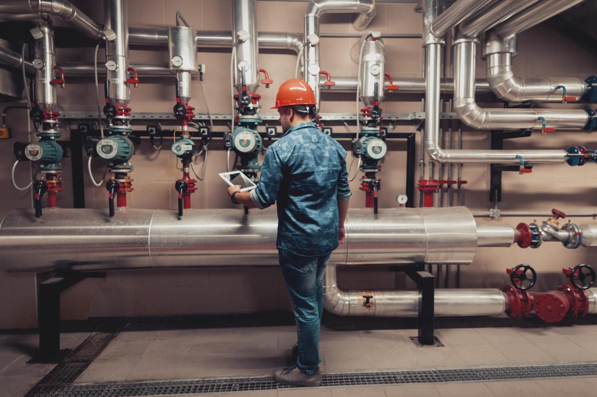

tags: democracy, equality, society, systemic, value creation
10 min read

I hear a lot of talk these days about the System being broken.
And by “the System,” I think we mean the interconnected workings of our economy, our society, our politics and our culture.
If we're not happy with the results, then we need to start with a clear understanding of our current situation.
We need to realize that the current system is, in fact, not broken.
Instead, in truth, it is doing exactly what it was designed to do, which is:
To continuously hoover up all the spare cash of those at the bottom of the socioeconomic pyramid and convey it to those at the very top, without the rest of us much noticing or caring.
The perfection of this system was demonstrated not too long ago after Hurricane Dorian blew through The Bahamas.
As an article in The Washington Post pointed out, the aftermath of the storm made the stark inequality of the area clear. In Baker's Bay, one of the Bahamas' most exclusive communities, celebrity homeowners were dealing with minor damage inflicted on their very substantial dwellings. Over in The Mudd, though – an informal, unregulated settlement built with abandoned construction materials on low-lying, flood-prone ground – many residents were dead, missing or, at best, completely homeless.
The only problem for those residing in Baker's Bay was that all of those who actually did any real work in the area resided in The Mudd and so were temporarily unavailable to perform the minor, although still important, repairs to the celebrity homes.
In other words, the major hurricane had caused a temporary labor shortage. Oh well. Just a minor burp in the system.
Because, you see, inequality is not evidence of a flaw in the design: rather, inequality is precisely the result that the system is designed to produce.
To better understand the system that we are currently enmeshed in, let's start with the concept of surplus, loosely referred to above as “spare cash.”
The ability we humans have to produce a surplus – to acquire more goods than we immediately need to sustain ourselves – is a fundamental attribute of our humanity. It is only by having surpluses of time and energy and materials that we are able to produce tools that make us ever more efficient, thus producing even greater surpluses, which we use to pursue all sorts of interesting ends other than simply feeding and clothing and housing and reproducing ourselves.
And so it is clear that surpluses exist – the mansions and other luxuries in Baker's Bay are evidence of that – just as it is clear that the residents of The Mudd have no surpluses, nothing available to them except the bare necessities needed for hand-to-mouth survival: nothing put away for a rainy day; and so no way of dealing with an extremely rainy and windy day when one inevitably strikes.
But that's one island in The Bahamas. It's different in the US, right?
There are a variety of sources with charts on wealth inequality in the US. Here's one that's very instructive:
What does this chart tell us?
Let's stop for a minute to consider the full peculiarity of what I just said:
Could this entirely odd and unnatural result possibly be the result of a mistake, or something unintentional? Especially considering that, by most measures, our US economy is functioning well, with low unemployment and rising stock prices?
No. A result that is this thorough and complete is entirely intentional. It's the result of a system that is working per its design.
So let me lay out the full scope of the system workings for you. The percentages I'll give you are approximate, but are close enough for the purposes of this narrative.
The bottom 10% of our society consists of the jobless, the homeless and the destitute. They are cared for, to the minimum extent necessary, by various government programs, non-profit institutions, religious organizations, and direct donations from those a little better off. These are people who have fallen off of the next rung on the ladder, for various reasons.
The next 40% of our society, rounding out the bottom half, consists of people working as hard as they can just to get by, people sometimes working two or three jobs just to stay out of that bottom 10%. They contribute to our economy by making things and performing services; they make a little money; then they turn around and spend all of that money on rent, on car payments, on food and clothing and phones and television and internet. The people at this rung can't afford to save much of anything, and can't afford to own much of anything. They're only one emergency away from living on the streets.
The next 45% of our society is a little better off. They're making more than minimum wage, they're only working one job, they're saving some money, they have some investments, perhaps in a 401(k), they are making mortgage payments on their own home, they probably own a decent car or two. But they're still working for a living, and likely have two wage-earners in a household, and probably still carry a fair amount of debt.
Now we get to the top 5%. This group owns 2/3 of the wealth in the United States. At this point, people no longer work for a living, but live off income streams generated by their investments.
And this is the way the system is designed to work. 85% of our society is contributing to our economy, which is generating a surplus, and the vast majority of that surplus is ending up in the hands of the top 5%.
And all the charts you can find indicate that this system is working better and better all the time. The big boys are finding ever more efficient ways to hoover up our surplus cash. Back when George Bailey was defending his father's Building and Loan from Mr. Potter, the main focus was rent. But the toolbox now includes interest rates on debt, financial fees, insurance payments, doctor and hospital bills not covered by insurance, internet service, phone service, music and video streaming services, cloud storage, app subscriptions, new computers every 3 - 5 years, new phones every 2 - 3 years, new cars every 5 - 10 years, new tech gadgets… and the list goes on.
Part of the beauty of this system is that most people – the top 89%, let's say, no matter what sub-range they fall into – are primarily motivated by fears of falling from their current precarious perch down to the next lower rung of the ladder. Most know they have little hope of climbing farther up the ladder, as economic mobility in the US has been nearly cut in half since 1940. But they dread slipping down to the next lower rung, and so they are motivated to continue their labors to keep their current spot in the system.
Over all of this, hanging like the Sword of Damocles, is the health of our local, national and global economies. For we understand all too well that if our economic engine stalls, it's likely to leave us all helplessly on the side of the road. And so whenever our leaders, or the appointed experts, tell us that we need to do this, or do that, or keep at it, in order to prevent our economy from becoming unwell, we feel that we have no choice but to obey.
And what keeps us from thinking too much about how the system is working? How it's clearly designed to work? Well, we have an abundant stream of “engaging” entertainment that is constantly directed at us to keep us distracted: social media, television shows, movies, sports, streaming music, blogs, podcasts, a non-stop multi-media flow of news and opinions about the news. And each of these engagements extracts a bit more cash from us, either by way of direct payment, or via advertising. Like mice in a maze, we're fed a bit of video/audio/text and we react. We click, we cheer, we boo. And then we're fed the next bit.
While all the while the system churns on, working ever more efficiently, hoovering up our spare cash and effortlessly transporting it to those at the top.
So is the situation hopeless? Must we smash the machine in order to allow a new and better one to emerge?
Nah. Not really. That approach is one presented by those in power as a doomsday scenario, to keep everyone in fear of unleashing the socialist furies: “Oh no! Not that! Anything is better than socialism!”
But we don't need anything that drastic.
The whole problem here can be stated in one phrase: how we allocate the surplus that our society generates.
We don't need to get rid of capitalism. It's ok – even necessary! – to continue sending capitalists a fair amount of our surplus so they can continue to invest in new businesses, new factories, new tools and so on.
But what we need to stop doing is sending them so much of our surplus. In other words, we need to send more of our surplus in other directions.
We can start sending more of it to those a little lower on the socioeconomic ladder. In other words, we can start rebuilding our middle class.
And we can send more of it to important shared endeavors, such as fighting global warming.
We just need to find the gauges in the system that control our surplus allocations – things like minimum wage, labor relations law, tax policies and spending policies – and dial those back a bit, so that a more equitable share of our surpluses are sent to workers and to communities.
Now the top 5% will not all agree that this is a wise thing to do. And they will spend much of their accumulated wealth to try to convince the rest of us that it's a stupid thing to do. And they will use scare tactics, trying to convince us that, if we dare to touch the dials on the machine, the whole thing will stop working.
Poppycock. That's what democracy is for. That's the whole purpose of democracy. So that the dials are not controlled solely by a small elite, but are adjusted by the people and for the people, via a government of the people.
It's up to us. The people. We just need to vote for those who are willing to put their hands on the dials and move them in the right direction.